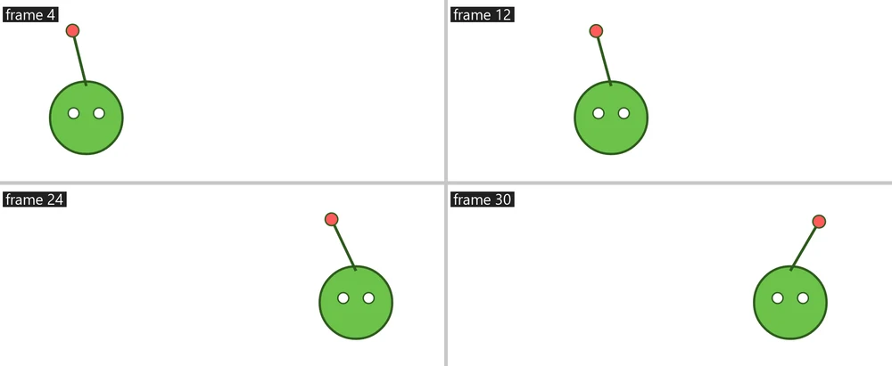
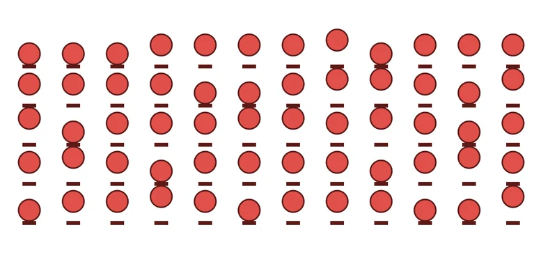
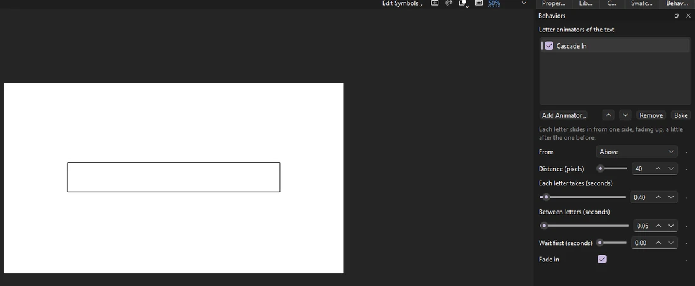
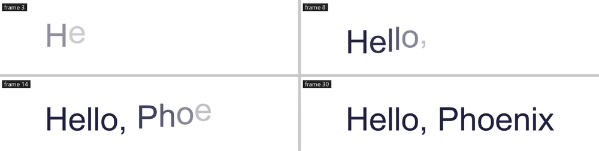
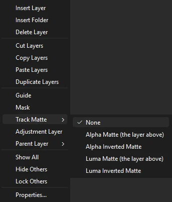
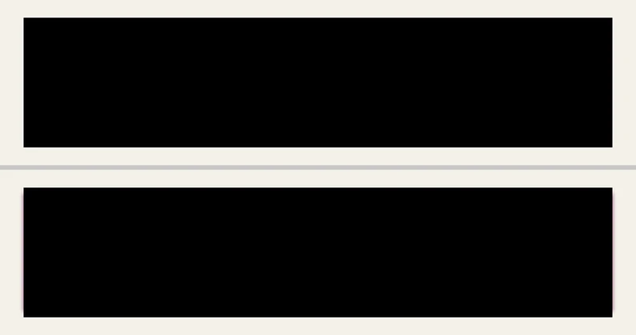

Animation
Behaviors
A behavior moves, turns, scales or fades a symbol instance by itself, frame after frame, with no keyframes: a sign that wiggles, a light that pulses, an antenna that trails the head it is on. Behaviors add to what the instance's keyframes and tweens already do, so you can key the big moves and let behaviors add the life.
Add a behavior
- Select one or more symbol instances on the stage.
- Open .
- Click Add Behavior and pick one. Pointing at a name in the list says what it does.
- Set what it offers with the sliders, boxes and lists under the list. The stage shows the result as you drag.

Play the timeline, or use Test Movie, to see the motion. Behaviors show the same way on the stage, in Test Movie and in every export.
- The box beside a behavior turns it off and on again.
- The arrows change the order behaviors apply in; Remove takes one away.
- Every change is a step you can undo. Dragging a slider is one step.
- With several instances selected, a behavior you add goes on each, and a setting you change changes on each instance that has that behavior in that place in its list.
- An instance copied to a new keyframe keeps its behaviors, and they carry on smoothly from one keyframe to the next as long as the same symbol stays in the same place on the layer.
The behaviors
| Behavior | What it does |
|---|---|
| Wiggle | Shakes the instance about at random, smoothly: its place, turn and size, as many times a second as you choose. |
| Oscillate | Swings it back and forth evenly: up and down, side to side, turning, growing or fading. |
| Spin | Turns it steadily about its transformation point. |
| Pulse | Grows and shrinks like a heartbeat. |
| Fade In and Out | Fades it in at the start of its keyframes and out at their end. |
| Blink | Makes it disappear and come back, on a beat or at random. |
| Loop | Repeats the motion keyed over the first frames of its keyframes for as long as they run: round and round (a cycle), back and forth, or carrying on the way it was going at the speed it ended with. Key a bob or a step once and loop it. |
| Jiggle | Makes it sway and bounce on a spring as it is carried about, turning about its transformation point: antennas, ears, a feather, a sign on a chain. It follows the layers it is parented to as well as its own keys; say which way it points from its pivot, how far it swings, how springy and how bouncy. |
| Follow with Lag | Makes it trail its own keyed motion on a spring: it lags behind, catches up and overshoots. Use it for hair, antennas, tails and props, keyed with the part they hang from. |
| Repeat in a Circle | Copies it round a circle about where it is, each copy turned to follow the circle if you like: the number of copies, the radius, the start angle and how far round they go. |
| Repeat in a Line or Grid | Copies it in a row, or in rows and columns, from where it is or centered on it. |
| Repeat along a Path | Copies it along the line drawn on the motion guide its layer is under, spaced evenly from one place on the line to another, each copy turned with the line if you like. Key Slide along to send the copies flowing down the line; with Wrap round off, copies that slide past an end disappear. |
| Scatter in a Shape | Copies it at random places inside a closed line drawn on the motion guide its layer is under, kept apart, turned and sized at random if you like: a field of flowers, stars in a window, a crowd in a square. The same places every frame, from the seed. |
| Follow Path | Puts it on the motion guide's line: key how far along it is, or give it a speed, and it travels the line, turned with it if you like. |
| Look At | Turns it to face another instance, chosen by its instance name: eyes that follow, a spotlight on a dancer, an arrow that points. |
| Link to Object | Moves, turns, scales or fades it as another instance does, from where each starts, with a lag if you like: a shadow under a bouncing ball, a wheel that turns as the car moves across. |
| Link to Controller | Sets its place, turn, size or fade from a master controller's slider (see Rigs and motion), between two values. |
| Effector | Changes the copies a Repeat or Particles behavior made: each copy moves, turns, grows, fades or runs its loop on by how near it is to a point, where it is across or down, or its place in the order. Key the point or its reach to sweep the change across the copies. |
| Particles | Sends out copies as particles, born at a steady rate from a point or an area: speed and direction with a spread, gravity, turbulence, spin, size from birth to death, fading. A graphic symbol's loop can start as each particle is born. Like everything else, the same frame always shows the same particles. |
| Stagger | Runs each copy's graphic loop a few frames after the one before, in order or at random, so copies of one cycle move out of step: a crowd, a field of grass, a wave. Put it after a Repeat behavior. |
| Follow Sound | Moves it with how loud the scene's sound is: it grows, jumps, turns, shows or changes frame on the beats, falling back gently after each. Ignore the quiet parts, and nudge it a frame or two early or late to taste. For lip sync proper, see Lip sync. |

Animate the settings
Any setting can change over time. The small button at the right of a setting keys it on the frame the playhead is on:
- Move the playhead to where the change starts and click the setting's key button. It fills in (◆): the setting is keyed there.
- Move the playhead on and change the setting. A keyed setting is keyed again wherever you change it.
Between keys a number runs in a straight line from one value to the next; a choice or a checkbox holds until the next key. The button is hollow (◇) on frames between keys; clicking it there keys the setting at the value it has, and clicking a filled one takes that key away. With its last key gone, the setting keeps the value it had.
Key the radius of Repeat in a Circle from 0 to 100, say, and the copies burst out from the middle; key its start angle and the ring turns; key the number of copies and they appear one by one.
Along a path
Repeat along a Path and Follow Path use the line on a motion guide, the same guide a classic tween can follow (see Masks and guides):
- Add a guide layer above the instance's layer and draw the line on it with the Pen, Pencil or Line tool: a curve, a spiral, a closed loop.
- Drag the instance's layer under the guide layer so it becomes guided, or set its type to Guided in Layer Properties.
- Give the instance Repeat along a Path or Follow Path.
Change the line and the copies follow it. A guide with keyframes of its own changes the line over time too. Guide layers are never drawn in exports, so only the copies show.
Copies
A Repeat behavior draws the instance many times. The behaviors below it in the list then work on every copy, each in its own way: a Wiggle after Repeat in a Circle wiggles each copy differently, and Stagger sets each copy's loop apart. The copies are drawn, played and exported like the instance itself; on the stage, clicking selects the instance through its first copy.



Turns and scales happen about the instance's transformation point, the same point the Free Transform tool turns it about.
Behaviors that are random (Wiggle, and Blink set to random) have a Seed. The same seed always gives the same motion, so a scene renders the same every time; New picks another seed for a different motion. Each behavior you add starts with a seed of its own, so two instances given the same behavior do not move in step.
Shape operators
Drawn shapes have operators of their own, which change their lines and outlines each frame. Select a shape (a drawing object, or a merge-drawn shape picked whole) with no symbol instance selected, and the Behaviors panel shows its operators: Add Operator offers them, and their settings key the same way.
| Operator | What it does |
|---|---|
| Trim Paths | Draws only part of the shape's lines, from a start to an end along them, with an offset that slides the drawn part round. Key the End from 0 to 100 and the line draws itself on; key the Start after it and it draws itself off. Fills are left whole. |
| Wiggle Path | Shakes the outlines and lines smoothly at random: how far, how long the waves are, how fast they change. Change on whole frames only makes it boil like redrawn line work. |
| Zig-zag | Puts teeth, or smooth waves, along the outlines and lines; key the shift to make them travel. |
| Offset Path | Grows the outlines outward by so many pixels, or shrinks them with less than 0, keeping their corners; holes shrink as the shape grows. |
| Round Corners | Rounds the sharp corners, up to a radius. |
| Pucker and Bloat | Pushes the sides between the corners out from the shape's middle (bloat), or draws them in (pucker, less than 0): a square that puffs up, a star that sharpens. |
| Repeater | Draws the shape again and again, each copy moved, turned and scaled from the one before: a trail, a spiral, a stack of rings. |


Operators keep the shape's fill and stroke as they are. Clicking on the stage finds the shape by its outline as drawn.
Letter animators
A text field's letters can move one by one while the text stays text you can edit. Select a text field (with no symbol instance or shape selected), and the Behaviors panel shows its letter animators: Add Animator offers them. Those that play by themselves count from the first frame of the keyframes the text is on.
| Animator | What it does |
|---|---|
| Typewriter | Types the text out a letter at a time, so many letters a second, after a wait if you like. |
| Cascade In | Each letter slides in from above, below, left or right, fading up, a little after the one before. |
| Bounce In | Each letter grows from nothing, past its size and back. |
| Fade by Word | The words fade in one after another. |
| Scramble | Letters flicker through random letters, digits or symbols until each settles on its own, left to right. |
| Wave | A wave runs through the letters, lifting and tilting them, for as long as the text shows. |
| Animate Letters | Moves, turns, sizes, fades, spaces out, colors and blurs the letters (or words, or lines) a range covers, the range's edge square, ramped, rounded or in random order. Key its Offset to sweep the change from one end of the text to the other: any effect the others do, and more. |


Letters turn and grow about their middles. Several animators add up: Cascade In and then Wave, say, brings the letters in and then keeps them moving.
Track mattes and adjustment layers
Two layer settings, on the layer's right-click menu in the timeline, change how layers combine.
- Track Matte shows a layer only through the layer just above it. An Alpha Matte shows it where the layer above has art, a Luma Matte where that art is light; the inverted ones show it everywhere else. The layer above becomes the matte and is not drawn itself. Unlike a mask, a matte can be soft (a blurred or faded shape gives a soft edge) and works while you edit, and both layers animate as usual: key the matte's art to make a reveal.
- Adjustment Layer makes a layer change everything drawn below it. With nothing selected on the stage, the Behaviors panel shows the current adjustment layer's effects: Add Effect offers Blur, Color Correction (brightness, contrast, saturation and hue) and Tint (toward a color, keeping light and dark), and their settings key like any others. An adjustment layer with no art changes the whole picture; one with art changes only where its art is, fading at soft edges.




Both are Phoenix's own: another app opening the FLA file draws the matte layer plainly and the adjustment layer's art as art. Export FLA for Other Apps carries them as far as such apps allow:
- An alpha track matte becomes a mask over the layer, hard-edged; a luma matte the same, by the matte's shape rather than its light. An inverted matte cannot be carried and is left drawn plainly.
- An adjustment layer's effects go on a movie clip holding the layers below it: Blur as a blur filter, Color Correction as an Adjust Color filter, Tint as a color effect, keyed a frame at a time where they change. The movie clip plays on its own when the movie plays, and art on the adjustment layer no longer limits where the effects reach.
The Output panel lists what was carried only in part.
Bake to keyframes
Baking turns behaviors into ordinary animation: every frame they touch becomes a keyframe holding the instance where its behaviors put it, its copies become instances of their own beside it, and the behaviors come off. What plays does not change, and you can then edit the frames by hand. Baking is one step you can undo.
- Bake in the Behaviors panel bakes the selected instances over all the keyframes they run through, and the selected shapes and text fields over their keyframes; a shape's operators are baked into drawing objects and a text's animators into a text field for each letter, a frame each.
- bakes the frames selected in the timeline.
Behaviors in saved files
Behaviors are Phoenix's own. They are saved with the instance in .phx and .fla files and come back when Phoenix opens the file. Another app that opens the FLA file shows the instances as they are keyed, without the motion behaviors add; when you save, Phoenix lists behaviors among the things such an app leaves out.
To hand the file to someone using another app, choose . It writes a copy (an .fla file or an XFL folder) with every behavior in the document baked into keyframes, so the other app plays the same motion. Your document itself keeps its behaviors.
Write your own behavior
You never need to write code to use behaviors, but you can make new ones in JavaScript. A behavior is a .js file in the Behaviors folder of your script configuration folder (beside the Commands folder). Phoenix reads the folder when it starts and again whenever a file there changes, so you can edit a behavior and watch the stage follow. The built-in behaviors are written the same way.
To start one, click Add Behavior and choose New Behavior...: Phoenix writes an example like the one below under the name you give and opens it in the script editor. Open Behaviors Folder shows where they are kept. The lesson Write your own behavior () walks through it.
behavior({
name: "Drift",
description: "Floats slowly to one side.",
params: {
speed: { label: "Pixels per second", value: 20, min: -500, max: 500 },
bob: { label: "Bob (pixels)", value: 4, min: 0, max: 50 }
},
evaluate: function (ctx, p) {
return {
x: p.speed * (ctx.frame - ctx.start) / ctx.fps,
y: Math.sin(ctx.time * 2) * p.bob
};
}
});Each entry under params becomes a control in the Behaviors panel. Its type is "number" (the default, a slider from min to max by step), "angle", "checkbox", "choice" (with a choices list) or "seed"; value is where it starts and label what the panel calls it.
evaluate is called for each frame with the settings as p and what it needs to know as ctx:
| In ctx | What it is |
|---|---|
frame, time, fps | The frame (from 0), the time in seconds and the frame rate. |
start, end | The first and last frames of the run of keyframes the instance is on. |
keyed | What its keys give it now: x, y (its transformation point), rotation, scaleX, scaleY and alpha. |
keyedAt(frame) | The same on another frame of the run, or null. |
random(n), noise(t, n) | A number from 0 to 1, and a smooth one from -1 to 1 that changes with t; both follow the seed and differ from copy to copy, and n picks a separate stream. |
path | The motion guide's line, or null: its length, and at(distance), the x, y and angle there. |
other(name, frame) | Another instance on the timeline, by its instance name, as its keys and its own behaviors leave it (on this frame, or frame), or null. |
controller(name) | A master controller's value from 0 to 1, or null. |
parentAt(frame, x, y) | Where the layers it is parented to put the point (x, y) on a frame, as {x, y}: the world its keys live in. |
loudness(frame) | How loud the scene's sound is on this frame (or frame), from 0 for silence to 1 for its loudest moment. |
current | What the behaviors above it have done so far to this copy. |
copy, copies | Which copy this is, from 0, and how many there are, after the behaviors above it made them. |
It returns what to add: x and y in pixels, rotation in degrees, scale, scaleX and scaleY as factors (1 is no change), alpha as a factor, and frame, the frames a graphic's loop runs on by. Leave out what it does not change. To make copies, return { copies: [...] }, a list of those, one for each copy. Settings can be keyed in the panel, and p always holds their values on the frame being worked out. A file named like a built-in one (wiggle.js) takes its place.
Behaviors run on their own, away from the document: they cannot read files, the clock or anything but what ctx offers, and one that takes too long is stopped. That keeps every frame the same each time it is drawn. An error is shown in the Output panel, and the behavior adds nothing until it is fixed.